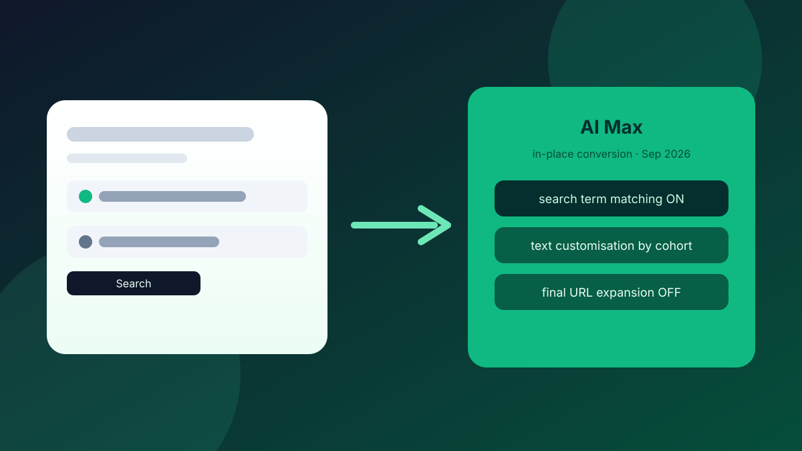

If you run Google Search for an ecommerce brand — your own store or a client's — September is not a quiet month. Between 1 and 30 September 2026, Google is progressively converting eligible Search campaigns to AI Max in place. That is not a banner you can ignore until next quarter. Campaigns still using campaign-level broad match, or still carrying legacy automatically created assets (text customisation), are in the queue. The conversion is automatic, the defaults differ by cohort, and the window is already open.
This is also not the DSA migration. Dynamic Search Ads are on a later track — banners from September, a reminder in mid-January 2027, and auto-migration in February 2027. Mixing the two timelines is how accounts get the wrong checklist. Here's what September actually does, which defaults land where, and what to do in the account this week before Google's mapping decides for you.
What Is Changing in September (and What Is Not)
On 12 August 2026, Google's Ads Developer Blog (Bob Hancock) confirmed a progressive, in-place conversion window from 1–30 September 2026. Eligible campaigns are those still on campaign-level broad match or still using legacy automatically created assets / text customisation. New creation of those legacy setups was already blocked from 3 August 2026 — so if something is still on the old pattern, it is living on borrowed time.
DSA is separate. Google's product blog (updated 11 June 2026) puts DSA on a later runway: account banners from September 2026, a reminder around 15 January 2027, and auto-migration between 1–28 February 2027. September's AI Max conversion is about Search campaigns with campaign-level broad match or legacy ACA — not about sunsetting DSA this month. If your team is only talking about DSA right now, they are solving next year's problem while this month's conversion walks through the door.
💡 Pro Tip
Label the two workstreams in your tracker: "AI Max Search auto-conversion — Sep 2026" and "DSA → AI Max — Feb 2027". Same product family, different clocks. One checklist for both will miss the settings that matter this week.
Two Cohorts, Two Default Maps
This is the part most "AI Max is coming" posts skip. Google is not flipping every eligible campaign to the same settings. Cohort defaults differ:
Broad-match cohort (campaigns still on campaign-level broad match): AI Max on, search term matching on, text customisation off, final URL expansion off. Brand lists are preserved.
ACA / text-customisation cohort (campaigns still on legacy automatically created assets): AI Max on, search term matching on, text customisation on, final URL expansion off.
That gap matters. Text customisation staying off for the broad-match cohort is a different risk profile than text customisation staying on for the ACA cohort. Final URL expansion stays off for both under auto-migration — which is not what you get if you mash "enable AI Max" yourself and accept the manual defaults. More on that below.
Google has not published what share of Search campaigns sit in either bucket. Do not invent a percentage for a client deck. Pull the account, filter for campaign-level broad match and legacy ACA, and count what you actually have.
Do This in the Account This Week
You have two clean options before Google's mapping runs: remove the legacy trigger, or enable AI Max yourself and set the three sub-settings deliberately.
1. Find the eligible campaigns. In Google Ads, list Search campaigns still on campaign-level broad match, and those still using legacy automatically created assets / text customisation. Export them. That list is your September scope — not "every Search campaign", and not DSA.
2. Decide: exit the trigger, or take AI Max on your terms. Turning off the legacy trigger (campaign-level broad match or legacy ACA, depending on the campaign) can take a campaign out of the auto-conversion path. Alternatively, enable AI Max manually now and set search term matching, text customisation, and final URL expansion yourself — then you are not inheriting Google's cohort map by surprise mid-month.
3. If you enable manually, re-check all three sub-settings. Manual enable typically turns text customisation and final URL expansion on. That is different from the auto-migration defaults above (where final URL expansion stays off for both cohorts, and text customisation stays off for the broad-match cohort). Enabling AI Max and walking away is how you inherit a more aggressive asset and landing-page surface than September's auto map would have given you.
4. After conversion, you can still toggle. Current Help documentation still lets you turn AI Max and the sub-settings on or off after the conversion. Do not tell a client there is a permanent opt-out forever — and do not tell them they are locked in either. Plan for review the day a campaign flips, not a week later when search-term and landing-page reports have already moved.
5. Protect brand and URL control where it matters. Brand lists are preserved on the broad-match cohort path — confirm they are still attached after conversion. If final URL expansion is on (especially after a manual enable), tighten landing-page allowlists / exclusions before you let Google invent destinations you did not brief.
What the Numbers Actually Say
Google's own claim (product blog, April 2026 / June update) is that the full AI Max suite drives about 7% more conversions or conversion value at a similar CPA/ROAS versus search term matching alone. That is a company figure — unauditable from the outside. Useful context for a client conversation; not something to present as independent proof.
Independent retail data is less tidy. Smarter Ecommerce (March 2026) looked at 250+ retail Search campaigns and reported a median +13% conversion value, a median +16% CPA, and a median ROAS difference of 0%. Read that carefully: more value, higher cost per acquisition, ROAS roughly flat at the median. That is not "free efficiency" — it is a different volume/cost shape you have to decide you want.
Traffic quality is the other watch-out. Lunio (updated 14 August 2026) reported AI Max invalid-traffic rising from 2.46% in Q4 2025 to 5.28% in Q2 2026, against standard Search ending that period at 3.07%. If you turn AI Max on and only watch ROAS, you can miss a dirtier click mix eating the same budget.
💡 Pro Tip
For every campaign you convert (or that Google converts), baseline the week before: conversion value, CPA, ROAS, branded vs non-branded split, and — if you have a filter like Lunio or equivalent — invalid-traffic rate. Compare the week after against that baseline, not against Google's 7% slide.
A Simple September Checklist
Keep it short enough to run on a Monday:
Export Search campaigns on campaign-level broad match or legacy ACA. Split them into "exit the trigger" vs "enable AI Max now". For every manual enable, force a review of search term matching, text customisation, and final URL expansion — do not accept the enable defaults blind. Confirm brand lists. Schedule a post-flip QA the day each campaign converts. Leave DSA on the February 2027 board.
None of this needs a rebrand of your account structure. It needs a list, three toggles, and a refusal to confuse September's Search conversion with next year's DSA migration.
If you want a second set of eyes on which campaigns are in the September cohort and how the three AI Max sub-settings should sit for your margins — request a free store audit. I go through the Search build myself and tell you what I'd change before Google's mapping does.
September's AI Max conversion is already rolling. Don't inherit the wrong defaults.
Send the store URL. I'll reply within one business day (Christchurch time) with the three things I'd check first on your Search setup — including whether you're in the auto-conversion cohort.
Get a free store audit